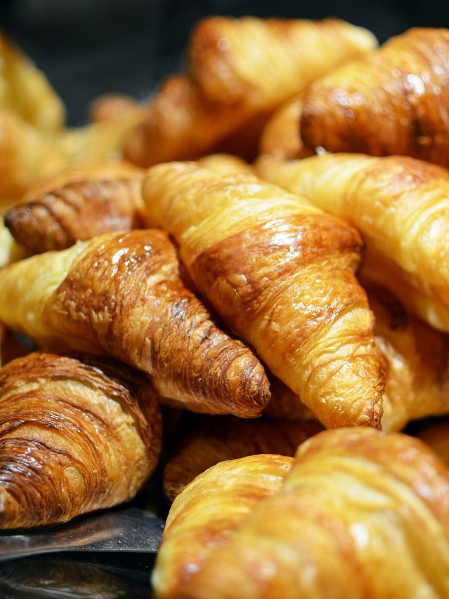

パン・キッチン / 高知県高知市
まるげんkitchen
高知県高知市南御座にある「まるげんkitchen」のご案内ページです。営業時間やメニューなど、詳しいことは準備中。まずはInstagramをのぞいてみてください。



制作側の連想
「まる」を、コンパスで描いてみる。
屋号の「まるげん」の由来は分かりません(人名や屋号マークかどうかも分かりません)。制作側は「まる」という音から、円を連想しました。丸いパン、丸い皿、丸い器。そこでこのページは、製図帳に円を描くように、写真をすべて円で切り抜いて並べています。高知市は土佐湾に面した南国の町ですが、お店との関係は分かりません。お店の理念や由来とは無関係な、制作側の連想です。
図1 / 直径のちがう円たち(イメージ)
大きさ違いのまる。
どの写真も、お店のものではないフリー素材です。丸いかたちのイメージで選びました。
 φ A
φ A φ B
φ B φ C
φ C φ D
φ D φ E
φ E図2 / ご案内
お店のこと(確認できたものだけ)
| 所在地 | 〒781-0084 高知県高知市南御座9-43 |
|---|---|
| 電話 | なし |
| 営業時間 | 準備中 |
| 定休日 | 準備中 |
| ご予約 | 準備中 |
| 駐車場 | 準備中 |
| SNS | Instagram @yamayu1315 |